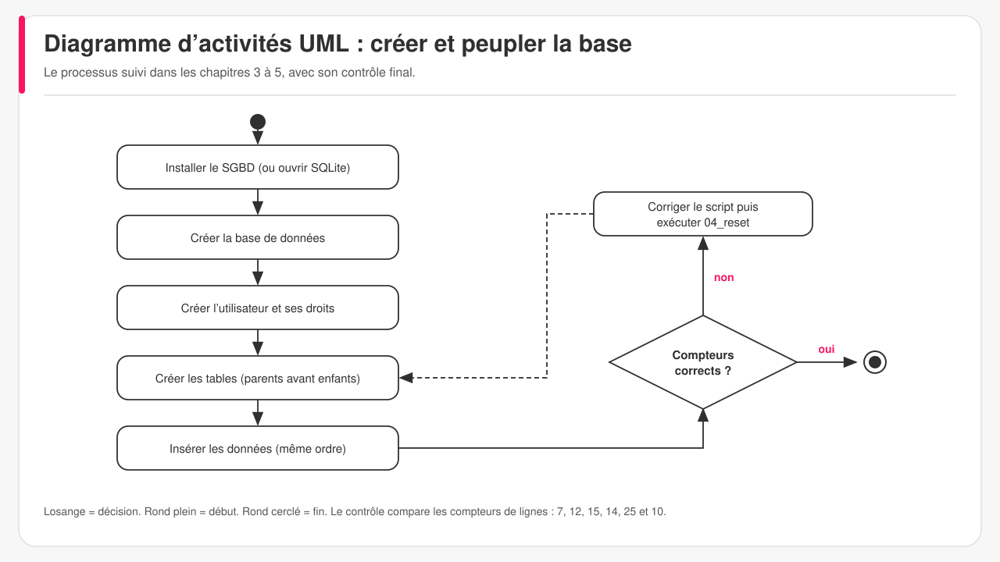

Administrer le serveur ou utiliser une base : deux rôles
Un serveur de bases de données héberge plusieurs bases. Deux activités très différentes coexistent :
- L’administration : créer des bases, des utilisateurs, décider qui a le droit de quoi. Elle est réservée à un compte puissant (
postgressur PostgreSQL,rootsur MySQL). - L’utilisation : créer des tables, lire et modifier des données dans une base donnée, avec un compte limité à cette base.
Travailler tous les jours avec le compte administrateur est dangereux : une erreur de frappe peut toucher n’importe quelle base. On crée donc un compte dédié au projet.

Créer la base et l’utilisateur
Une base de données est un conteneur nommé pour un ensemble de tables. Un utilisateur (ou rôle) est un compte identifié par un nom et un mot de passe.
PostgreSQL
-- Exécuté en tant que superutilisateur (postgres)
CREATE ROLE bookstore_user LOGIN PASSWORD 'change_me_please';
CREATE DATABASE bookstore OWNER bookstore_user ENCODING 'UTF8';
MySQL
-- Exécuté en tant qu'administrateur (root)
CREATE DATABASE bookstore CHARACTER SET utf8mb4;
CREATE USER 'bookstore_user'@'localhost' IDENTIFIED BY 'change_me_please';
GRANT ALL PRIVILEGES ON bookstore.* TO 'bookstore_user'@'localhost';
SQLite
Aucune instruction SQL : une base SQLite est un fichier.
Commande du terminal : sqlite3 bookstore.db
Le fichier est créé à la première écriture.
Points à comprendre :
- PostgreSQL distingue le rôle (
CREATE ROLE … LOGIN) de la base (CREATE DATABASE … OWNER …). Le propriétaire peut créer ses tables. - MySQL crée la base, puis l’utilisateur (identifié par
'nom'@'hôte'), puis lui accorde des droits avecGRANT. - SQLite n’a ni
CREATE DATABASEniCREATE USER: c’est un moteur intégré à l’application, sans comptes SQL. L’accès se contrôle avec les permissions du système de fichiers sur le fichier de base.
Ces scripts sont fournis dans sql/postgresql/01_setup.sql, sql/mysql/01_setup.sql et sql/sqlite/01_setup.sql. Ils ont été exécutés sans erreur sur PostgreSQL 16.15 et MySQL 8.0.46.
Se connecter avec le compte dédié
PostgreSQL
psql -h localhost -U bookstore_user -d bookstore
MySQL
mysql -u bookstore_user -p bookstore
SQLite
sqlite3 bookstore.db
Une fois connecté, bookstore_user peut créer les tables du chapitre 4, mais ne peut ni créer d’autres bases ni créer des rôles (sous PostgreSQL, créer un rôle exige l’attribut CREATEROLE).
Les privilèges : GRANT et REVOKE
Un privilège est un droit précis : lire une table (SELECT), y ajouter des lignes (INSERT), les modifier (UPDATE), les supprimer (DELETE). GRANT accorde un droit ; REVOKE le retire.
Principe du moindre privilège : chaque compte ne reçoit que les droits dont il a besoin. Une personne qui consulte des statistiques n’a pas besoin de pouvoir effacer des commandes. Créons un compte en lecture seule :
PostgreSQL
-- 1. Par le superutilisateur
CREATE ROLE bookstore_reader LOGIN PASSWORD 'reader_pw_demo';
GRANT CONNECT ON DATABASE bookstore TO bookstore_reader;
-- 2. Par le propriétaire des tables
GRANT USAGE ON SCHEMA public TO bookstore_reader;
GRANT SELECT ON ALL TABLES IN SCHEMA public TO bookstore_reader;
-- Retrait du droit
REVOKE SELECT ON ALL TABLES IN SCHEMA public FROM bookstore_reader;
MySQL
CREATE USER 'bookstore_reader'@'localhost' IDENTIFIED BY 'reader_pw_demo';
GRANT SELECT ON bookstore.* TO 'bookstore_reader'@'localhost';
-- Retrait du droit
REVOKE SELECT ON bookstore.* FROM 'bookstore_reader'@'localhost';
SQLite
Pas de GRANT ni de REVOKE.
Contrôle d'accès : permissions du fichier (lecture seule possible
avec : sqlite3 -readonly bookstore.db).
Ces commandes ont été exécutées pour de vrai : avec le compte bookstore_reader, un SELECT fonctionne, un DELETE est refusé (permission denied for table books sur PostgreSQL ; DELETE command denied sur MySQL), et après REVOKE même la lecture est refusée.
Résumé des différences
| Besoin | PostgreSQL | MySQL | SQLite |
|---|---|---|---|
| Créer une base | CREATE DATABASE |
CREATE DATABASE |
Un fichier, créé à l’ouverture |
| Créer un compte | CREATE ROLE … LOGIN |
CREATE USER |
Non disponible |
| Accorder un droit | GRANT |
GRANT |
Non disponible |
| Retirer un droit | REVOKE |
REVOKE |
Non disponible |
| Clés étrangères actives ? | Toujours | Toujours (InnoDB) | PRAGMA foreign_keys = ON; à chaque connexion |
Exercice guidé : un compte pour la comptabilité
La comptable doit pouvoir lire les tables orders et payments de la base bookstore, rien d’autre. Que faut-il lui accorder, et pourquoi ne pas lui donner ALL PRIVILEGES ?
Afficher la correction détaillée
Elle n’a besoin que du privilège SELECT, et seulement sur ces deux tables (par exemple GRANT SELECT ON orders, payments TO accountant sur PostgreSQL ; GRANT SELECT ON bookstore.orders TO … puis la même chose pour payments sur MySQL). ALL PRIVILEGES permettrait de supprimer ou modifier des données et de détruire des tables : c’est contraire au moindre privilège et multiplie les conséquences d’une erreur ou d’un compte compromis.
Exercice autonome : SQLite et les droits
Un collègue vous demande de « créer un utilisateur en lecture seule » dans une base SQLite. Que répondez-vous ?
Afficher la correction détaillée
SQLite n’a pas de comptes SQL : il n’existe donc pas d’instruction pour en créer. L’accès se règle hors du SQL : permissions du fichier sur le disque, ou ouverture du fichier en lecture seule par l’application ou le client (sqlite3 -readonly bookstore.db). Si un contrôle d’accès fin par compte est indispensable, c’est un argument pour choisir PostgreSQL ou MySQL.
Valider · question 1
Voir la justification de chaque réponse
- Incorrect — SQLite : SQLite n’a pas de gestion native de comptes SQL.
- Bonne réponse — MySQL : MySQL a CREATE USER ; PostgreSQL utilise CREATE ROLE avec l’attribut LOGIN.
- Incorrect — Aucun des trois : MySQL le propose.
Valider · question 2
Voir la justification de chaque réponse
- Incorrect — Que les requêtes s’exécutent plus vite : Il ne concerne pas la performance.
- Bonne réponse — Que chaque compte n’ait que les droits nécessaires à sa tâche : Cela limite les dégâts en cas d’erreur ou de compromission.
- Incorrect — Que tous les comptes partagent le même mot de passe : Au contraire : un compte par usage.